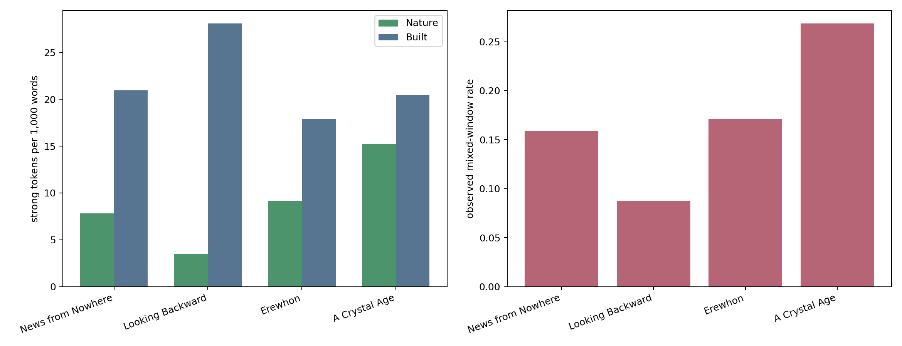
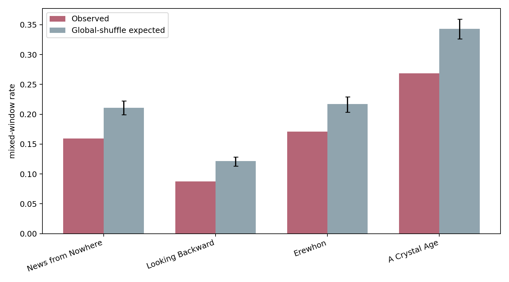

1 — Starting point: Bennett (2026)
「rewilded Britain」という読解は、本文分布にも現れるか？
Wild Belongings
Stories of Rewilding in William Morris’s News from Nowhere and Diane Setterfield’s Once Upon a River
Thamesのagency
川は人間の背景ではなく、自律的な存在として回復する。
都市と田園の接続
Londonは森・草地・果樹・川によって再編される。
土地に応答する建築
家や橋は自然と対立せず、土地から育つように構想される。
検証課題 この読解は、自然語と建造環境語の局所的共存として測れるか。またMorrisに固有なのか。
2 — Literary corpus
4作品の文学史的位置づけ
同時代に「よりよい社会」を描きながら、産業・都市・自然への態度が異なる4作品を選ぶ。
William Morris, News from Nowhere 1890 / 1891
革命後の未来イングランドをThamesの旅として描く社会主義的・田園的ユートピア。Bennettの検証対象。
Edward Bellamy, Looking Backward 1888
西暦2000年のBostonを、中央集権的な産業組織と都市制度によって描く技術・制度中心の対照作。
Samuel Butler, Erewhon 1872
機械・病気・制度を反転して批判する風刺的ユートピア／ディストピア。産業文明への両義性を担う。
W. H. Hudson, A Crystal Age 1887 / 1919 rev.
遠未来の共同体を田園、家、装飾、家族秩序から描く牧歌的ロマンス。自然密度の高い比較作。
同一ジャンルの均質な標本ではなく、後期ヴィクトリア朝ユートピアの「自然―産業」スペクトラムをつくる小規模な比較コーパスである。
3 — Operationalization
Bennettの質的主張をNature–Built mixingへ翻訳する
Nature pole
river / tree / meadow / flower / mist
×
Built pole
house / street / wall / building / window
① 意味軸を凍結
GloVe embeddingから軸を作り、strong語彙をStage 1で固定。
② 50語の局所窓
step 25、章境界を保持。両極のstrong語があればmixed。
③ 二段階で検証
4作品の全体比較 → Bennettが挙げる13場面の直接照合。
作品比較は「Morrisに固有か」を、13場面照合は「Bennettの具体例を拾えるか」を問う。
4 — Corpus-level test
Morrisは比較コーパスで最多ではなかった
News from Nowhere が自然と建造環境を最も多く共存させる、という強い予測は支持されない。

0.269A Crystal Age 0.171Erewhon 0.159News from Nowhere 0.087Looking Backward
5 — Null model
4作品とも、ランダム配置より両極を分けて置く

global shuffle比
Morrisは 0.756。どの作品も1を下回り、Nature/Built語はランダムより凝集・分離する。
段落内shuffle比
Morrisは 0.927。分離の多くは、両極が別段落へ配分されることから生じる。
Bennettの読解は、作品全体の単純な「混合量」ではなく、特定場面の構成として検証すべきである。
6 — News from Nowhere: local evidence
Bennettの論点に対応するmixed場面は、局所的には強い
産業の荒廃
第10章 / rank 1
“manufacturing districts … Houses … trees were cut down … building”
tree × manufacturing · house · building
開かれた古い家
第31章 / rank 2
“river … meadow … house … door and windows … flowers”
river · meadow · flower × house · door · window
都市のMuseum
第8章 / rank 7
“railings were gone … boughs of the trees … pigeons … building”
tree × building
Morrisの特徴は全体量ではなく、London・建築・産業を自然との関係から作り直す場面にある。
7 — Comparative counterexample
A Crystal Age は別の仕方で、より頻繁に両極を結ぶ
自然が家の内部に響く
第5章 / mixed rank 4
“the ocean’s voice is in their rooms … salt spray … low tide … the whitewinged bird”
tide · sea · bird × roof · room · floor
自然形態が素材へ固定される
第14章 / mixed rank 7
“The only flowers in the house … wrought in metal and carved in wood”
flower × house · metal
Morrisのrewildingが都市・社会の変容を語るのに対し、Hudsonでは自然と室内・装飾の接続が反復される。mixing率だけでは両者の文学的機能は区別できない。
8 — Direct validation of Bennett’s examples
Bennettの13場面を照合すると、9件は実質的に拾える
9 実質的ヒット 橋・道路・家・都市の森など
1 弱い／曖昧 tree × space
2 形式的誤検出 power / morning / night
1 未検出 town–countryの関係概念
binary mixed12 / 13→ 語義を人手監査9 + 1有効候補
「12/13を検出」だけなら過大評価になる。static embeddingの多義語を除くと、明確な支持は9件である。
9 — Diagnostic cases
橋は拾えた。町と田舎の関係は落ちた。
✓ 捕捉：Hammersmith Bridge
Bennett論文頁5の「澄んだThames・鮭・工場の消失・新しい橋」。
Stage 2 rank 12：
river × building · booth · shop
上位20と直接重なる論文事例はこの1クラスター。
△ 未捕捉：town ↔︎ country
論文頁6の「町と田舎が相互に影響し、差が小さくなる」。
10 overlapping windows中 mixed = 0
物体語ではなく、関係と変化を表す概念だからである。
次の改善 場所語・関係表現の辞書、または文脈埋め込みを加え、語義監査済みの結果と比較する。
Appendix — Sources & reproducibility
Sources
- Bennett, Phillippa. “Wild Belongings: Stories of Rewilding in William Morris’s News from Nowhere and Diane Setterfield’s Once Upon a River.” Green Letters, 2026. https://doi.org/10.1080/14688417.2026.2733353
- Morris, William. News from Nowhere. Reeves & Turner, 1891.
- Hudson, W. H. A Crystal Age. Duckworth, 1919 revised edition.
- Bellamy, Edward. Looking Backward: 2000–1887. Ticknor, 1888.
- Butler, Samuel. Erewhon. Trübner, 1872.
Repository artifacts
slides.md: editable source of truthindex.html: generated presentationdata/work_summary.csv: work-level resultsdata/permutation_summary.csv: null-model resultsdata/bennett_2026_nfn_alignment.csv: 13-case external alignment
Main window: 50 tokens / step 25. Global and paragraph-preserving permutations: 1,000 each. The primary frozen axis was not retuned after observing Stage 2 results.